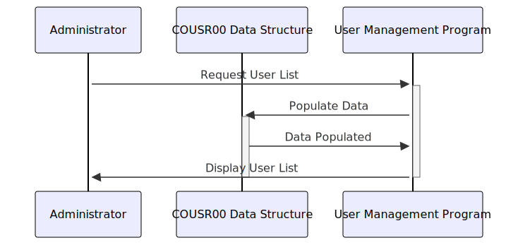

Gerado em: 1º de outubro de 2024
Título do Documento: COUSR00 - Estrutura de Dados da Tela de Gerenciamento de Usuários
Descrição Resumida: Este documento descreve a estrutura de dados COUSR00, utilizada pela Tela de Gerenciamento de Usuários dentro da aplicação CardDemo. Esta tela permite que administradores visualizem e potencialmente gerenciem informações do usuário. A estrutura define o layout para dados de entrada (COUSR0AI) e saída (COUSR0AO), primariamente usados para exibição e interação com a tela.
Histórias do Usuário: Como administrador, preciso visualizar uma lista de usuários, seus detalhes (ID, nome, tipo) e potencialmente selecioná-los para ações futuras. Esta tela deve me fornecer as informações e ferramentas necessárias para gerenciar usuários de forma eficaz.
Épico Relacionado: 6 - Gerenciamento de Usuários e Segurança
Requisitos Técnicos:
Manipulação de Dados da Tela: A estrutura COUSR00 é central para como a Tela de Gerenciamento de Usuários manipula dados.
COUSR0AI): Esta parte da estrutura provavelmente recebe dados da tela, como seleções ou entradas do usuário.COUSR0AO): Esta parte é responsável por formatar e enviar dados de volta para a tela para exibição.Detalhamento em Nível de Campo:
Informações do Usuário: Cada entrada de usuário na tela é representada por um conjunto de campos dentro de COUSR00:
USRID: ID exclusivo do usuário (provavelmente exibido e usado para seleção).FNAME: Primeiro nome do usuário.LNAME: Sobrenome do usuário.UTYPE: Um código representando o tipo ou função do usuário (por exemplo, ‘A’ para administrador).SEL####: Um sinalizador de seleção (provavelmente uma caixa de seleção) para marcar usuários específicos.Informações do Sistema:
TRNNAM: O nome da transação atual (para contexto e registro).PGMNAM: O nome do módulo do programa que manipula a tela.CURDAT: Data atual (provavelmente exibida na tela).CURTIM: Hora atual.PAGENU: Número da página se a lista de usuários abranger várias telas.Troca de Dados (Tela e Programa): A cláusula REDEFINES em COBOL é crucial aqui. Ela permite que os mesmos dados sejam referenciados de duas maneiras diferentes:
TRNNAM é redefinido como TRNNAME com subcampos (TRNNAME*) para atributos de exibição. Isso é comum em COBOL para lidar com a forma como os dados são apresentados (cor, destaque) em uma tela.Validação de Dados (Potencial): Embora não seja explicitamente definido na estrutura, o programa que usa esta estrutura é provavelmente responsável por:
USRID sejam exclusivos.CURDAT e CURTIM em um formato de exibição amigável.Modelos Relacionados
User: Representa um usuário dentro da aplicação CardDemo.
USRID String: Identificador único para cada usuário.FNAME String: Primeiro nome do usuário.LNAME String: Sobrenome do usuário.UTYPE String: Código do tipo de usuário.Configurações:
Melhorias de Código:
Melhorias de Segurança:
Diagrama Conceitual:
–Made by “Smart Engineering” (by Compass.UOL)–